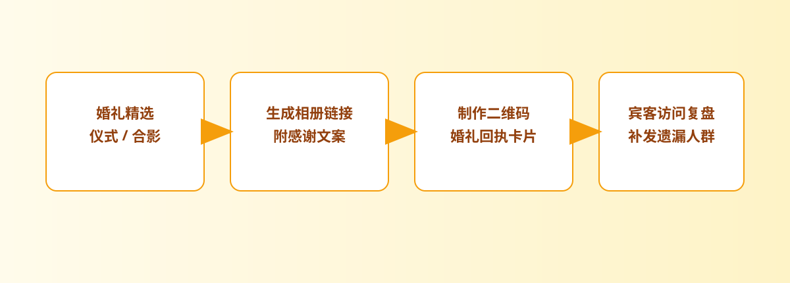

婚礼路径
先整理预览，再给亲友一个统一入口
婚礼场景里最容易失控的，就是预览图、精修图和朋友圈转发混在一起。先把一组照片整理出来，再生成统一链接，读者拿到的会是一个清楚入口，而不是零散图片。

婚礼结束后通常会出现一个很现实的问题：亲友想尽快看到照片，新人又不希望精修样张长期裸奔在群里。摄影师还可能需要先发预览、再发正式版。真正省心的做法，应该兼顾“让人容易打开”和“让内容不过度扩散”。
婚礼摄影师、新人、婚礼策划，或者需要把婚礼照片发给家人和宾客的人。
先发预览图、现场扫码回看、婚后给亲友补发，以及后续把旧入口及时关掉。
当前更适合轻量婚礼图集分享，一组最多 25 个文件，不是完整云相册系统。
婚礼照片不是发得越快越好，而是要让亲友看得顺手，同时让你自己保留后续管理的余地。
提示：下面的流程图和配图都可以点击放大，细节会更清楚。
婚礼场景里最容易失控的，就是预览图、精修图和朋友圈转发混在一起。先把一组照片整理出来，再生成统一链接，读者拿到的会是一个清楚入口，而不是零散图片。


婚礼这种线下场景，本来就很适合二维码。把同一个入口转成二维码以后，贴在桌卡、感谢卡或现场物料上，比临时在群里翻链接更自然。
婚礼后最常见的动作就是把照片发到家庭群、朋友群、新人群。与其一次发很多张，不如先发一个完整入口，让大家知道“去哪里看”。


把二维码放进婚礼现场或者后续感谢卡里，亲友扫码就能回看，不需要你二次解释“链接在哪”。这类场景里，入口清楚比功能堆得多更重要。
链接和二维码在这里一起出现，所以它不是一个普通后台页面，而是婚礼照片开始被亲友接触的起点。


如果你只想让亲友在某个时间段看预览图，或者婚礼结束后一段时间就把入口关掉，打开次数、有效期和失效设置会非常实用。
婚礼照片分享最好的状态，不是亲友收到最多图片，而是他们一打开就能顺着看完，同时你自己仍然知道什么时候该把入口收回来。